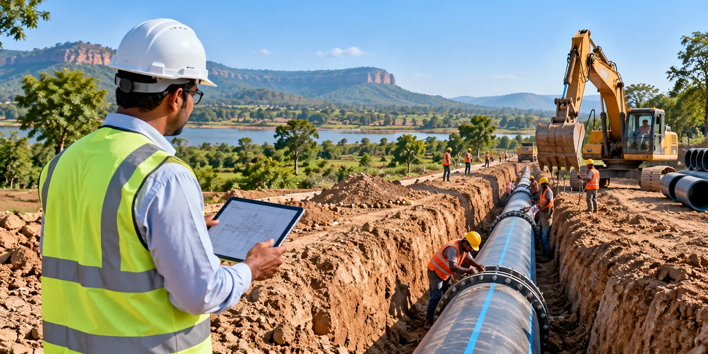

The Assignment
The State Water & Sanitation Mission required Project Management Consultancy (PMC) support for the implementation of rural piped water supply schemes across Sonbhadra district in Uttar Pradesh.
The assignment involved planning and design, procurement support, construction supervision and quality control to support the implementation of large-scale water supply infrastructure across multiple project packages.
Our Approach
CS TECH Ai provided end-to-end Project Management Consultancy support across six water supply packages covering 2,400 villages.
The engagement included:
- Planning and design support
- Preparation of bid and tender documents
- Support for the bid process and selection of project executing agencies
- Construction supervision
- Quality assurance and quality control (QA/QC)
- Monitoring of project implementation
- Coordination across multiple water supply packages
The programme covered approximately 2,800 km of water supply network, 14 Water Treatment Plants and 150 ESRs/GSRs, designed to serve a population of approximately 4 million.
CS TECH Ai provided structured technical and project-management oversight from pre-construction planning and procurement through construction and implementation.